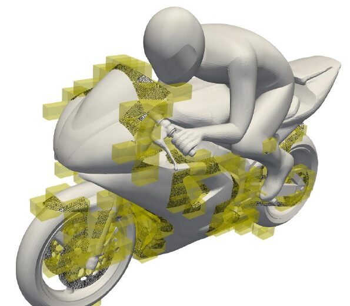

The problem
Every CFD study starts with a mesh, and building one around a complex geometry is still slow and largely manual: NASA's CFD Vision 2030 study names it one of the main bottlenecks of the whole workflow.1 Cartesian grids are the fastest meshes to build and the simplest to solve on, but they don't fit complex shapes, so most tools fall back on slow, hand-tuned body-fitted meshing.
What I built
A polyhedral cut-cell meshing library written from scratch, which slices the cells that touch the surface into exact polyhedra. It needs only a closed STL surface and one point in the fluid. It handles multiple cuts per cell, multiple objects and non-manifold geometry, and processes each cell independently so the work can be distributed.
Result
Benchmarked on 9 reference geometries, from a simple 118-triangle cone to a detailed 1.1M-triangle 3D scan. I fitted a power-law runtime model and identified surface trimming as the main cost driver, then tested the meshes end to end in OpenFOAM on its standard motorbike case.
Scope
The input surface must be closed (watertight), and the grid must be fine enough that no surface feature passes through a cell unresolved. Within those limits the cuts follow the STL surface exactly.
Presented at the 20th OpenFOAM Workshop, Vienna, July 2025: “Polyhedral Cell Decomposition Applied on Structured Cartesian Grids for Fluid Dynamics” (R. Signoriello, R. Mereu, F. Piscaglia). The code is not public yet; I'm happy to walk through the algorithm and the benchmarks in a call.

